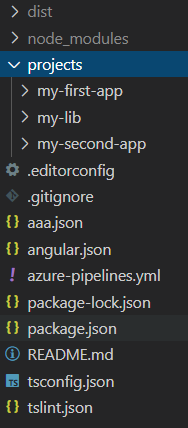
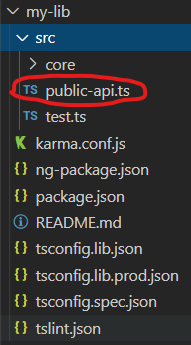

Workspace Angular
המטרה:
פרויקטים שונים אך רכיבים ( client וגם server) אחידים
טופס שעומד בפני עצמו ולא יהיה בסיכון אם וכאשר נפתח טופס נוסף באותו פרויקט
כי אז אולי עוד שנה נעלה שוב גרסה לפרויקט.
אך רק לא לשכפל קוד שוב ושוב והמציא את הגלגל מחדש בכול פעם.
וכן לאפשר מהירות פיתוח ושימוש ברכיבים שכבר יצרתי כמו קלט של ת"ז מעוצב ובודק תקינות
אז איך עושים זאת ANGULAR?
כשיש צורך בפרויקטים שונים שחולקים רכיבים זהים
אבל כול פרויקט עומד בפני עצמו ללא תלות כלל בפרויקט השני ניתן להשתמש ב Workspace
אז איך עושים זאת ANGULAR?
כשיש צורך בפרויקטים שונים שחולקים רכיבים זהים
אבל כול פרויקט עומד בפני עצמו ללא תלות כלל בפרויקט השני ניתן להשתמש ב Workspace
מימוש:
כל פרויקט חדש שנפתח Angular נמצא כבר בתוך Workspace (כמו שכל פרויקט חדש שאנו פותחים ב Visual Studio נמצא בתוך solution)
כדי ליצור את Workspace ללא פרויקטים פנימיים אלא רק המעטפת נשתמש בפקודה:
ng new my-workspace --createApplication="false"
נכנס לתוך הפרויקט:
cd my-workspace
לאחר מכן נוכל ליצור פרויקטים
cd my-workspace ng generate application my-first-app
ועוד פרויקט :
cd my-workspace ng generate application my-first-app
ניצור ספריה רוחבית:
ng generate library my-lib
הפרויקט שנוצר:

הספרייה my-lib היא הספרייה שתכלול את הרכיבים הרוחביים שברצוננו לשתף בפרויקטים השונים
בדוגמה שלנו my-first-app ו my-second-app
בספריה my-lib בתוך תיקית src ישנו קובץ TS שנקרא public-api.ts
קובץ זה מגדיר אילו מהשירותים שלך בספריה היהיו ציבוריים מוכרים לשימוש שאר הפרויקטים הצורכים את הספריה
כדי להשתמש בספריה הרוחבית שייצרנו יש לבצע עליה build :
ng build my-lib –prod
–prod תוספת של פקודה זו חשובה לפני ביצוע ה publish לספריה ולגישה פנימית
ואז נוכל בפרויקטים שיצרנו לצרוך את רכיבים מהספריה רכיבים שהוגדרו ב public-api.ts
לדוגמה בפרויקט my-first-app ב app.module.ts נבצע import לmy-lib
